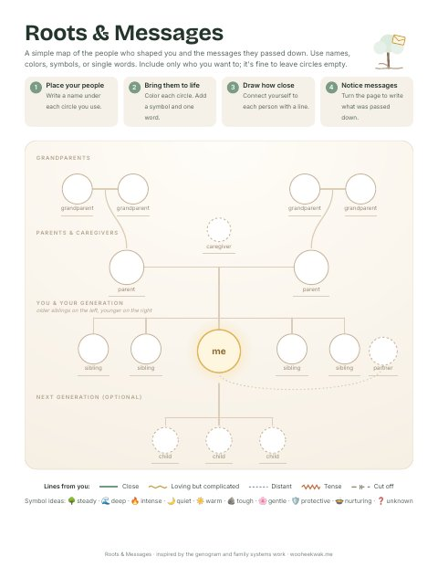

Expressive Arts Worksheets
Visual, hands-on exercises that help clients explore identity, values, and what's shaping their lives. Each one is a conversation starter, not an assessment.
-

Adults · 35 to 40 minutes
My Inner Landscape
A tree map for exploring where someone comes from, what they need, what they stand for, how they spend their life, who sustains them, what weighs on them, and who they're becoming. Especially useful for life transitions, burnout, and identity work.
- Roots
- Soil
- Trunk
- Branches
- Leaves
- New growth
- Weather
- Falling leaves
Draws on expressive arts, narrative practice, and ACT values work
-

Teens · 20 to 30 minutes
My Inner World
A gentle tree map for teens to share where they come from, their strengths, what they enjoy, who they feel okay around, what they hope for, and what's weighing on them. Designed to lower the spotlight for quiet or hesitant teens.
- Roots
- Trunk
- Branches
- Leaves
- New growth
- Clouds
Draws on expressive arts and narrative practice
-

Teens and adults · 35 to 45 minutes
Roots & Messages
A lighter, visual take on the genogram. Clients map who shaped them across three generations, color and name each person, draw how close they feel, then write the messages passed down and choose which to carry, rewrite, or leave. Especially rich for bicultural and immigrant families. Pairs with the interactive version for between sessions.
- Family map
- Colors & symbols
- Closeness lines
- Messages
- Carry · Rewrite · Leave
- My version
- Strengths
Draws on the genogram, family systems thinking, and narrative re-authoring
Client Handouts
One-page psychoeducation guides, each with a diagram, practical strategies, reflection questions, and references. Print one for session, or send the link. Clients can also browse the full library on their own.
Using These with Clients
Invite, don't assign
Offer tools as an experiment. "Want to try this before next time?" leaves room to say no, and a skipped exercise is useful information too.
Follow their meaning
Worksheets and summaries are conversation starters, not assessments. Ask what stood out rather than interpreting answers for them.
Privacy by design
The interactive tools keep everything on the client's device. Nothing is sent to this site. At the end, clients choose whether to email their summary to you from their own email app or bring a PDF to session. Agree together on whether email is okay.
Within your scope
Use these alongside your clinical judgment and your practice's policies. They are not crisis tools; share crisis resources (like 988 in the U.S.) as needed.
Help Shape These Tools
These tools are evolving, and I'd love your clinical feedback. What's working in your sessions? What's missing? How could they be more clinically sound, evidence-based, and practical? I read every note and keep improving the tools based on what I hear.
Opens your own email app with a short template. Please don't include client-identifying information.